Edita el archivo
pom.xml en la raíz de tu proyecto, allí descomenta la dependencia de MySQL
<dependency>
<groupId>com.mysql</groupId>
<artifactId>mysql-connector-j</artifactId>
<version>8.1.0</version>
</dependency>
Edita
src/main/webapp/META-INF/context.xml de tu proyecto y ajusta la definición de tu fuente de datos para que apunte a MySQL, algo así:
<Resource name="jdbc/invoicingDB" auth="Container"
type="javax.sql.DataSource"
maxTotal="100" maxIdle="20" maxWaitMillis="10000"
username="root" password="r123456"
driverClassName="com.mysql.cj.jdbc.Driver"
url="jdbc:mysql://localhost:3306/invoicingdb"/>
Este código ya se encuentra en el
context.xml, comenta la fuente de datos que apunta a HSQLDB y descomenta el de MySQL, luego debes usar tu
url,
username,
password.
Por último edita
src/main/resources/MEFA-INF/persistence.xml y agrega la linea del dialecto
org.hibernate.dialect.MySQL8Dialect como se muestra abajo
<persistence-unit name="default">
<provider>org.hibernate.jpa.HibernatePersistenceProvider</provider>
<non-jta-data-source>java://comp/env/jdbc/invoicingDS</non-jta-data-source>
<class>org.openxava.session.GalleryImage</class>
<class>org.openxava.web.editors.DiscussionComment</class>
<class>com.openxava.naviox.model.ConfigurationRecord</class>
<class>com.openxava.naviox.model.Folder</class>
<class>com.openxava.naviox.model.History</class>
<class>com.openxava.naviox.model.Module</class>
<class>com.openxava.naviox.model.ModuleRights</class>
<class>com.openxava.naviox.model.Organization</class>
<class>com.openxava.naviox.model.Role</class>
<class>com.openxava.naviox.model.SessionRecord</class>
<class>com.openxava.naviox.model.User</class>
<properties>
<property name="javax.persistence.schema-generation.database.action" value="update"/>
<property name="hibernate.dialect" value="org.hibernate.dialect.MySQL8Dialect" />
</properties>
</persistence-unit>
Después de los cambios has de reconstruir (rebuild) tu proyecto. En OpenXava Studio pulsa con el botón derecho del ratón en tu proyecto y escoge
Run As > Maven install, así:

Ya estaría la primera parte, ahora debemos crear el proyecto JPA en Eclipse.
Crear proyecto JPA y conexión a base de datos
El paquete de Eclipse que instalamos tiene
Dali y
DTP(Data Tools Platform) instalado, en caso de que no hayas instalado esa versión, deberás hacerlo manualmente.
Abrimos Eclipse que instalamos recién y procedemos a crear un proyecto JPA con
File > New > JPA Project
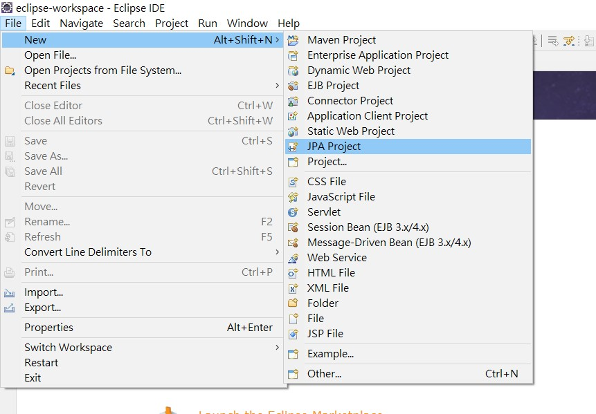
Ingresamos el nombre del proyecto, y luego en
Target runtime seleccionamos alguna versión de
Java 1.8 en adelante instalado,
JPA version 2.2.
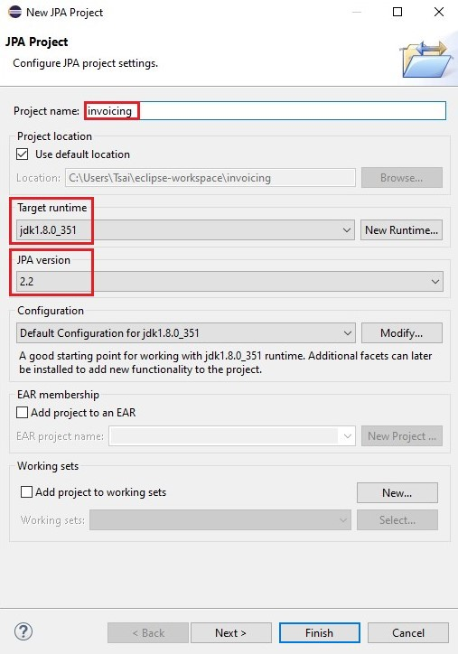
Seleccionamos
Next dos veces hasta ver la siguiente pantalla, aquí en
JPA implementation deshabilitamos las configuraciones de librería eligiendo
Disable Library Configuration. Luego procedemos con crear la conexión a la base de datos con
Add connection
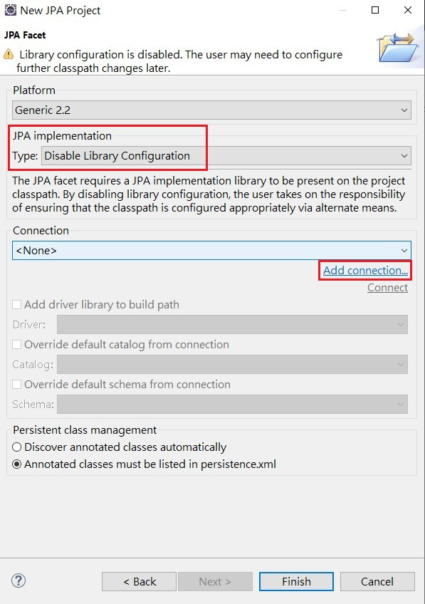
En la ventana que aparece debemos seleccionar la base de datos que tenemos, en nuestro caso será MySQL, puedes nombrar el nombre de la conexión en
Name
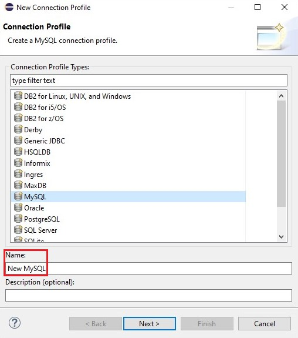
Aquí es donde vamos a seleccionar el driver que usaremos para la conexión, procedemos a crear uno nuevo como está en la imagen.
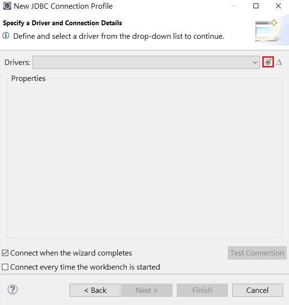
Seleccionamos
MySQL JDBC Driver 5.1 y en
Driver name lo nombramos para identificarlo cada vez que lo usamos
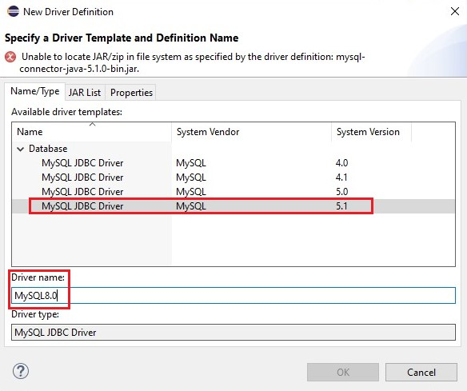
Aquí removemos el driver por defecto seleccionando
mysql-connector-java-5.1.0-bin.jar y luego pulsar
Remove JAR/Zip, ahora añadimos el más nuevo que puedes descargar
aquí, recuerda descargar la opción ZIP, una vez descargado lo añades con
Add Jar/Zip
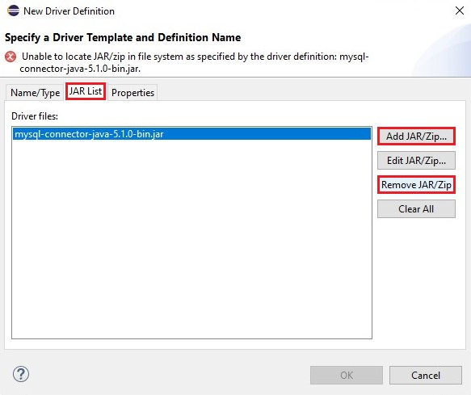
Debería quedar algo parecido a esto, le damos
Ok.
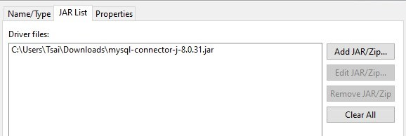
Nos llevará a la ventana anterior, donde ahora debemos rellenar los datos, en
Database podemos usar cualquier nombre para diferenciarlo de otras conexiones, en
URL debemos poner la conexión a la base de datos y por último rellena usuario y contraseña de la base de datos. Una vez completo, puedes probar si la conexión es correcta por
Test Connection, luego tildamos
Save password y apretamos en
Finish.
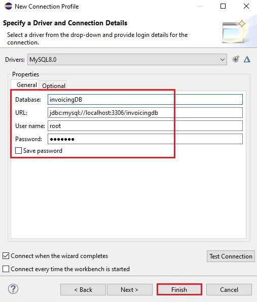
Ahora verás la primera ventana, allí tilda la opción de
Override default schema from connection y selecciona el esquema de la conexión, luego presiona en
Finish. Ya tendrías el proyecto JPA y la conexión a tu base de datos creados.
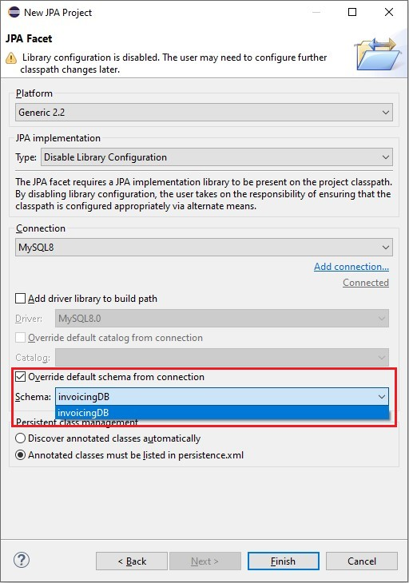
Al apretar
Finish, en algunos casos te puede aparecer una ventana para abrir una perspectiva, en caso de que no lo haya puedes visualizar la conexión en el panel
Data Source Explorer en
Windows > Show View > Data Source Explorer
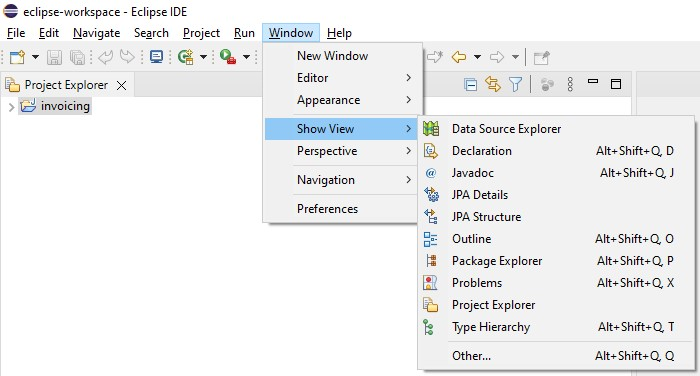
Si no aparece en
Show View, deberás agregarlo manualmente desde
Other... ingresando data source en la ventana que te aparece
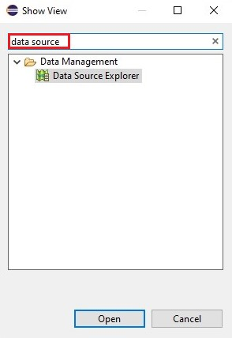
Ahora si en el panel de
Data Source Explorer, podrás ver la conexión a la base de datos.
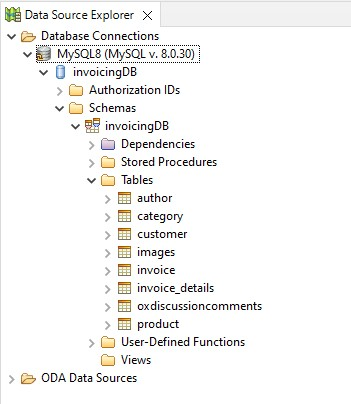
Generar entidades a partir de tablas en Eclipse
El objetivo final de este artículo, es generar las entidades desde las tablas de la base de datos, ya tenemos la conexión hecha, ahora queda generarlas. Has clic derecho en el proyecto y presiona en
JPA Tools > Generate Entities from Tables...
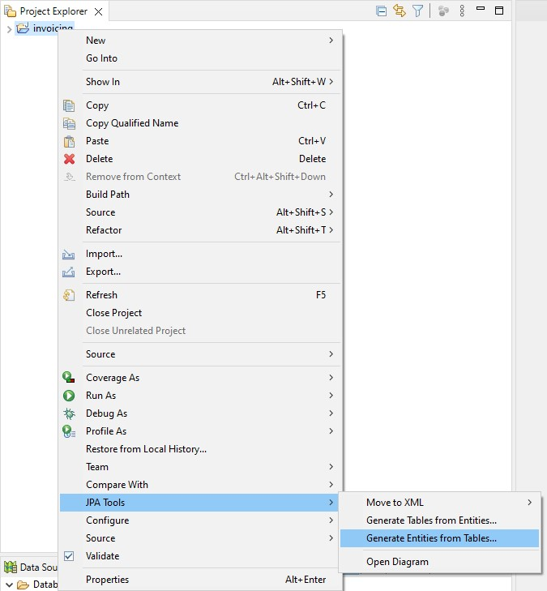
Acá debes seleccionar las tablas que quieras generarle una clase/entidad, vamos a seleccionar todos excepto
images y
oxdiscussioncomments que son tablas generadas automáticamente por OpenXava
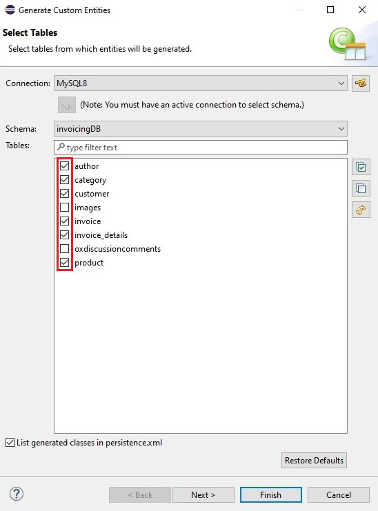
En esta vista te muestra todas las relaciones entre las tablas que ha encontrado, puedes añadir o bien, quitar relaciones que hay, recuerda que estas relaciones se convertirán en código de la clase generada. Luego aprieta
Next
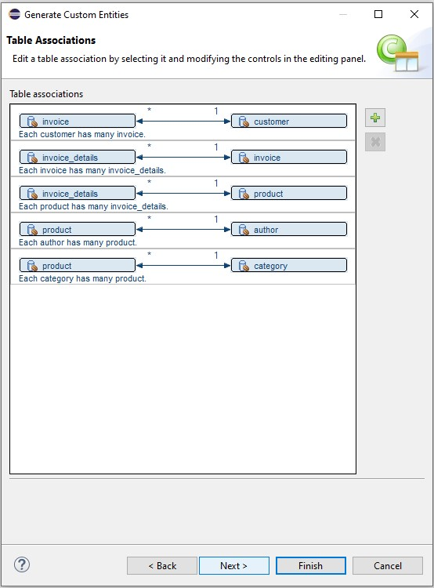
En esta pantalla tienes varias opciones para elegir, nosotros dejaremos todo por defecto y solo cambiaremos en
Collection properties type a
java.util.List y marcamos la opción de
Always generate optional JPA annotations and DDL parameters, más abajo en
Package, debes poner tal como lo tienes en OpenXava, en nuestro caso será
com.yourcompany.invoicing.model, y ya podemos presionar en
Next
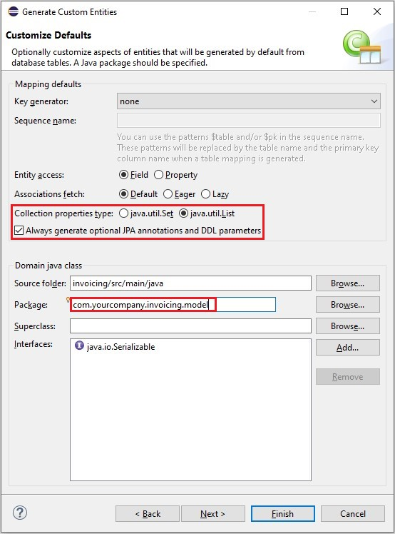
Acá podemos explorar tabla por tabla, y adaptar cada propiedad, por ejemplo OpenXava no trabaja con TINYINT, BLOB, GEOMETRY, entre otros.
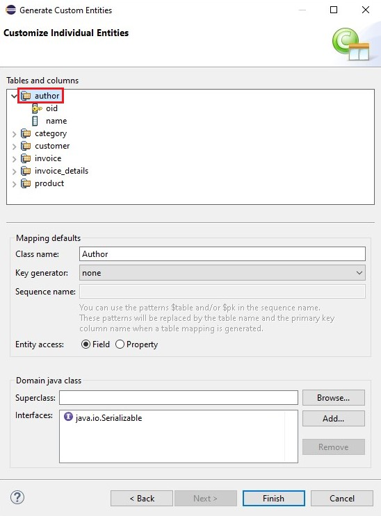
Al seleccionar una propiedad, nos permite cambiar el nombre del mismo, como también el tipo de la propiedad y si esa propiedad es id o no. Le damos clic en
Finish y esperamos a que generen todas las clases.
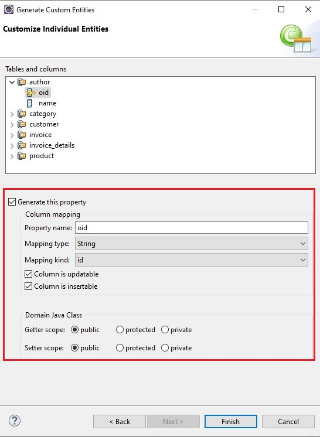
Las clases generadas están ubicadas en la carpeta
src/main/java, dentro del paquete
com.yourcompany.invoicing.model como lo hemos definido arriba, copiamos todas y las pegamos en el paquete
com.yourcompany.invoicing.model que debes crear en el proyecto de OpenXava que creamos al inicio del artículo:
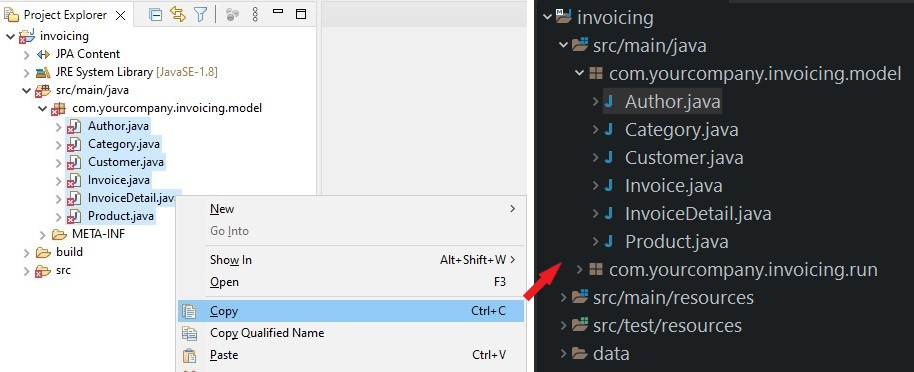
Adaptar código para OpenXava
El código autogenerado es suficiente, pero no está adaptado para funcionar en una aplicación OpenXava, vamos a hacer algunas modificaciones, algunas son opcionales. En Author tenemos una relación de @OneToMany con Product, donde nos indica que cada autor puede tener muchos productos, es decir, nos interesa mostrar varios productos relacionados con el autor seleccionado, agregamos una anotación @ListProperties() con los parámetros "number, description, price"
public class Author implements Serializable {
...
@OneToMany(mappedBy="author")
@ListProperties("number, description, price")
private List<Product> products;
En
Invoice tenemos dos relaciones,
@ManyToOne con
Customer y
@OneToMany con
InvoiceDetail. Vamos a dejar
Customer como está y en
InvoiceDetail eliminamos la anotación de
@OneToMany, en su lugar agregaremos 2 anotaciones,
@ElementCollection y
@ListProperties("product.number, product.description, quantity")
public class Invoice implements Serializable {
...
//@OneToMany borramos esta anotación
@ElementCollection
@ListProperties("product.number, product.description, quantity")
private List<InvoiceDetail> invoiceDetails;
En
InvoiceDetail, vemos que esta clase no tiene ninguna propiedad
@Id, ya que en su lógica, es una clase incrustada. Cambiamos
@Entity por
@Embeddable y eliminamos la relación con
Invoice porque no nos interesa.
@Embeddable
//@Entity eliminamos esta anotación
@Table(name="invoice_details")
@NamedQuery(name="InvoiceDetail.findAll", query="SELECT i FROM InvoiceDetail i")
public class InvoiceDetail implements Serializable {
private static final long serialVersionUID = 1L;
@Column(nullable=false)
private int quantity;
//bi-directional many-to-one association to Product
@ManyToOne
@JoinColumn(name="product_number")
private Product product;
//Comentamos o eliminamos la relación con Invoice y su método getter, setter
//@ManyToOne
//private Invoice invoice;
//public Invoice getInvoice() {
// return this.invoice;
//}
//public void setInvoice(Invoice invoice) {
// this.invoice = invoice;
//}
}
Por último eliminamos la relación con
InvoiceDetail, también debemos eliminar algunos métodos de la misma clase como aparece debajo
//añade la anotación @DescriptionsList a Author y Category
@ManyToOne
@JoinColumn(name="author_oid")
@DescriptionsList
private Author author;
@ManyToOne
@JoinColumn(name="category_oid")
@DescriptionsList
private Category category;
//Comentamos o eliminamos la relacion con InvoiceDetail, su método getter, setter y addInvoiceDetail, removeInvoiceDetail
//@OneToMany(mappedBy="product")
//private List<InvoiceDetail> invoiceDetails;
//public List<InvoiceDetail> getInvoiceDetails() {
// return this.invoiceDetails;
//}
//public void setInvoiceDetails(List<InvoiceDetail> invoiceDetails) {
// this.invoiceDetails = invoiceDetails;
//}
//public InvoiceDetail addInvoiceDetail(InvoiceDetail invoiceDetail) {
// getInvoiceDetails().add(invoiceDetail);
// invoiceDetail.setProduct(this);
// return invoiceDetail;
//}
//public InvoiceDetail removeInvoiceDetail(InvoiceDetail invoiceDetail) {
// getInvoiceDetails().remove(invoiceDetail);
// invoiceDetail.setProduct(null);
// return invoiceDetail;
//}
Ejecutar aplicación
Ahora iniciamos la aplicación, pulsa el botón
Run:

Espera hasta que la consola muestre un mensaje diciendo "Aplicación iniciada", como este:
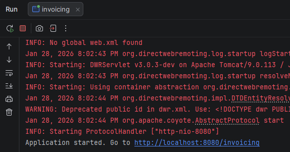
Ya tienes tu aplicación ejecutándose. Para verla, abre tu navegador favorito (Chrome, Firefox, Edge o Safari) y ve a la siguiente URL:
Estás viendo tu aplicación por primera vez. Para empezar pulsa en el botón SIGN IN:

Ahora, introduce admin/admin y pulsa en ENTRAR:
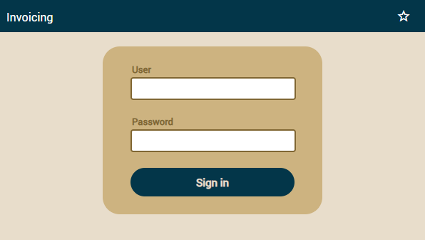
En la izquierda está el panel de módulos, actualmente estamos en el módulo de
invoices donde primero se muestran las propiedades de la entidad
Invoice, al medio se muestra la relación
@ManyToOne con c
ustomer y por último está la colección de
invoiceDetails, verás que una de las características de OpenXava es poder brindar una forma distinta de visualizar la propiedad dependiendo de sus anotaciones, para más información puedes seguir el
curso de OpenXava.
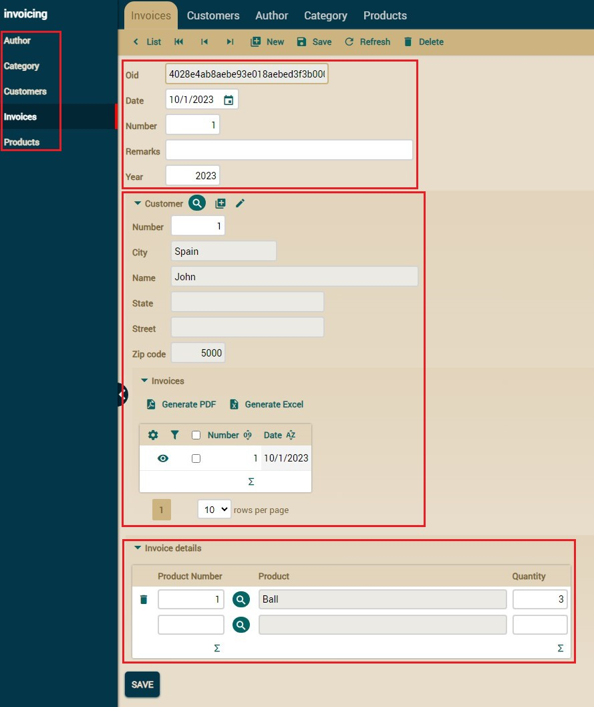
¿Problemas con el tutorial? Pregunta en el foro ¿Ha ido bien? Sigue el curso de OpenXava